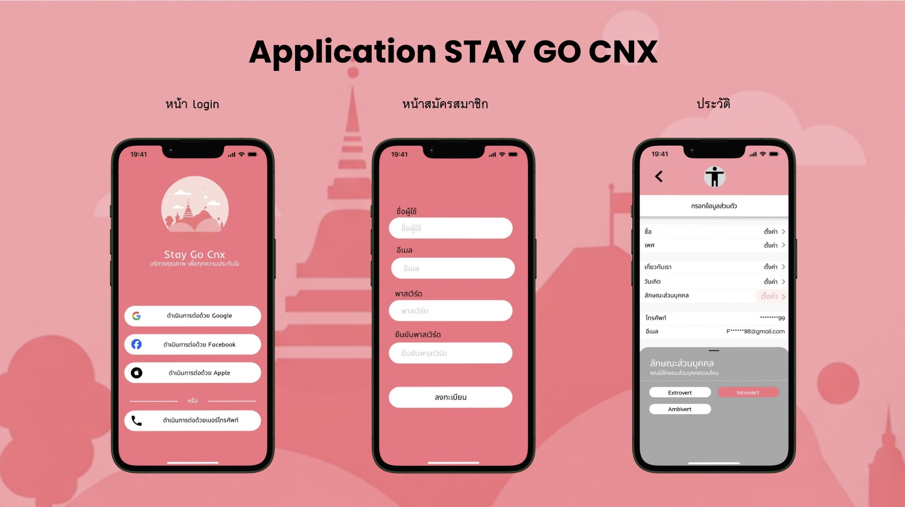
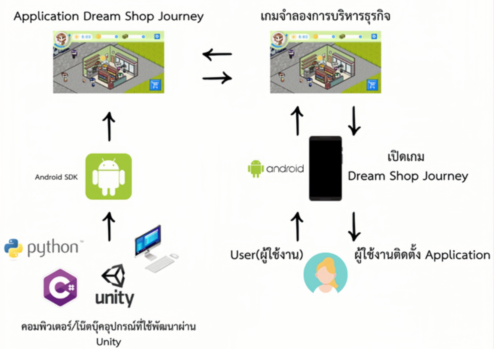
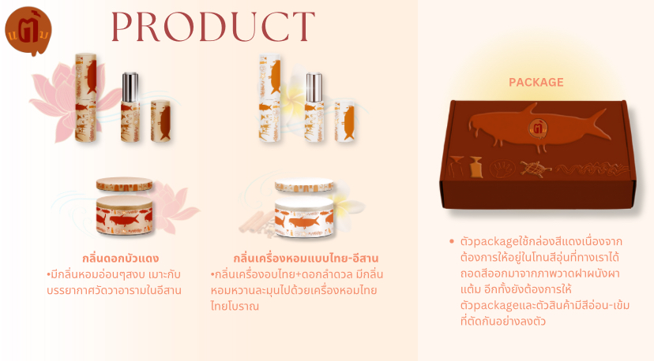
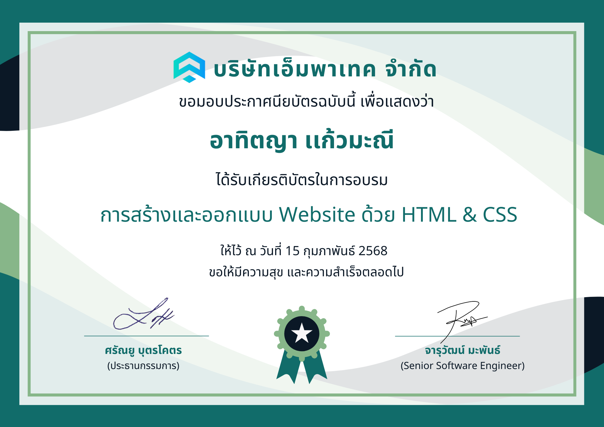

Project ME

Project Stay Go CNX
คือบริการเสริมโรงแรมที่ใช้ AI จับคู่นักท่องเที่ยวกับคนขับท้องถิ่น เพื่อการเดินทางที่เป็นส่วนตัว เพิ่มมูลค่าโรงแรม สร้างรายได้ชุมชน และส่งเสริมการท่องเที่ยวอย่างยั่งยืน

โครงการ Dream Shop Journey
เป็นโครงการพัฒนาเกมเพื่อการเรียนรู้ ช่วยฝึกการวางแผน การตัดสินใจ และการแก้ปัญหาด้านการเงินและอาชีพ สำหรับนักเรียนมัธยมปลาย แม้เกมยังไม่สมบูรณ์ แต่ทีมมีความตั้งใจพัฒนาต่อยอดให้เป็นสื่อการเรียนรู้ที่มีคุณภาพในอนาคต
Project Empathy Map Canvas
โครงการนี้ศึกษามุมมองของนักศึกษาและวัยทำงานด้วย Empathy Map Canvas เพื่อเข้าใจความคิด ความรู้สึก และความต้องการ พบว่าทั้งสองกลุ่มมีความเครียดเหมือนกัน แต่แตกต่างกันตามบริบทชีวิต โดยนักศึกษาเครียดจากการเรียนและอนาคตส่วนวัยทำงานเครียดจากงาน ความรับผิดชอบ และครอบครัว

Project Taem Balm
“แต้ม” คือแบรนด์บาล์มสมุนไพรที่ได้แรงบันดาลใจจากผาแต้ม จังหวัดอุบลราชธานี ผสานธรรมชาติและวัฒนธรรมไทย สร้างความหอมและความผ่อนคลาย โดยโลโก้สื่อถึงการแตะเติม ใช้โทนสีธรรมชาติเพื่อสะท้อนเอกลักษณ์สมุนไพรไทยCertificates

การสร้างและออกแบบ
Website ด้วย HTML & CSS

NSO DATA CAMP 2025

Gosoft Hackathon 2025